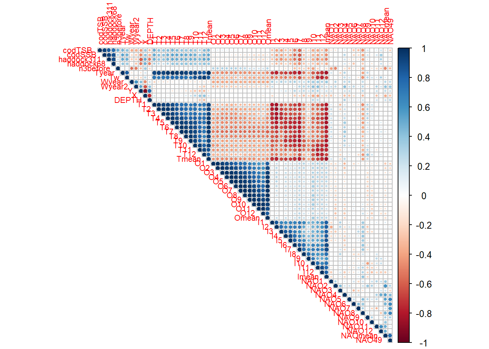
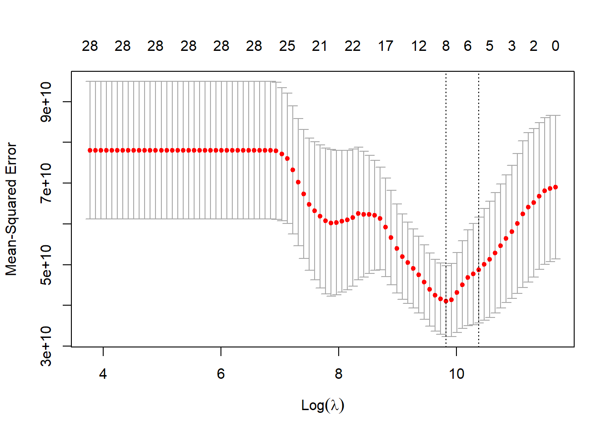
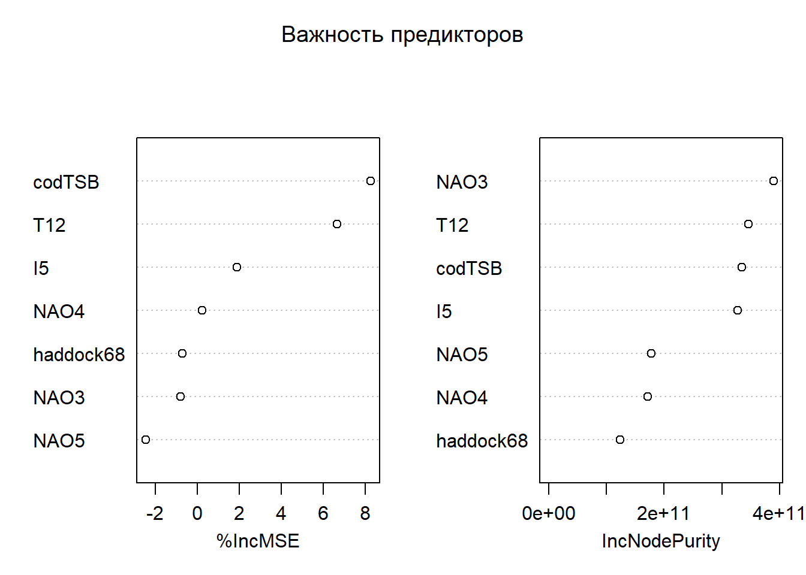
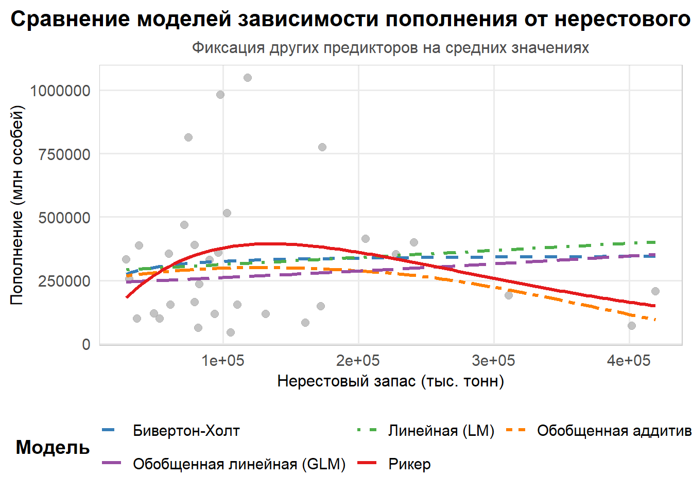
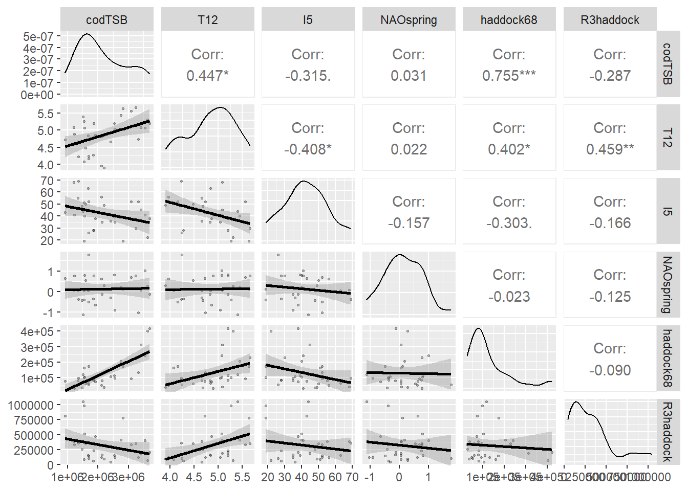
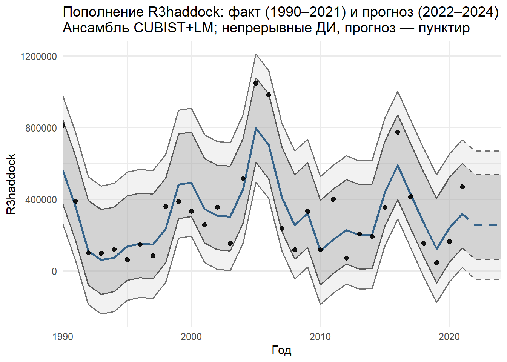

В этой практической работе представлен цикл прикладного анализа зависимости пополнения запаса гидробионта от факторов среды (в том числе нерестового запаса): от подготовки данных и отбора предикторов до сравнения нескольких семейств моделей, выбора устойчивой к хронологии прогностической схемы и построения прогноза с доверительными интервалами. Подход ориентирован на начинающих, но использует современные приёмы: автоматический отбор признаков (Boruta, LASSO), сопоставление линейных/нелинейных моделей, time-slice валидацию и ансамблевый прогноз. • Целевая переменная: R3haddock — пополнение запаса. • Кандидатные предикторы: гидрометеорология (температуры T…), океанография (O…), биотические показатели (например, codTSB) и нерестовый запас (haddock68). • Цель анализа: понять, какие факторы и в каких формах оказываются значимыми, отобрать рабочий набор моделей и получить прогноз на 2022–2024 с оценкой неопределенности.
Построение биологически мотивированных (механистических) нелинейных классических моделей «запас-пополнение» Рикера и Бивертона-Холта. Анализ их значимости и сравнение с моделями LM/GLM/GAM. Скрипт можно скачать по ссылке
Построение классических статистических моделей LM/GLM/GAM. Анализ их прогностических способностей и выполнение прогноза. Скрипт можно скачать по ссылке
Полный цикл ( СКРИПТ) прикладного анализа зависимости пополнения запаса гидробионта от факторов среды, включающий:
а) выбор предикторов;
б) базовое сравнение различных моделей;
в) выбор лучшей прогностической модели;
г) ансамблевый прогноз.
Входные данные для работы скрипта: RECRUITMENT.xlsx, а также промежуточный файл с готовым набором предикторов: selected_predictors_dataset.csv.
8.2 Выбор предикторов
В процессе анализа факторов, влияющих на пополнение рыбных запасов, ключевым этапом является тщательная подготовка данных и отбор наиболее информативных предикторов, поскольку качество последующих моделей напрямую зависит от качества входных данных. Начиная с первичной обработки, мы приводим все потенциальные предикторы к числовому формату, так как большинство статистических и машинно-обучаемых моделей требуют именно такой представления данных, при этом заменяем строковые обозначения пропущенных значений «NA» на стандартные NA, что позволяет системе R корректно обрабатывать отсутствующие наблюдения. Для заполнения пропусков мы применяем медианную импутацию, которая представляет собой простой и устойчивый к выбросам метод, поскольку медиана менее чувствительна к экстремальным значениям по сравнению со средним. Хотя существуют и более сложные альтернативы, такие как множественная импутация с использованием пакета mice, KNN-импутация через recipes::step_impute_knn или даже методы, специально разработанные для временных рядов, например, фильтр Калмана или ARIMA-модели, медианная импутация остается практичным выбором для начального этапа анализа, особенно когда объем данных ограничен или временные зависимости не являются доминирующими. Следующим важным этапом является анализ корреляционной структуры данных, поскольку высокая мультиколлинеарность между предикторами может серьезно ухудшить интерпретацию моделей и завысить дисперсию оценок параметров, особенно в линейных моделях. Для автоматического выявления и устранения сильно коррелированных переменных мы используем функцию findCorrelation с пороговым значением коэффициента корреляции 0.8, что позволяет сохранить лишь один представитель из каждой группы высококоррелированных переменных. Хотя альтернативными подходами могут служить диагностика по значениям VIF или применение методов снижения размерности, таких как PLS или PCA, удаление явно коррелированных предикторов оказывается наиболее прямолинейным решением для обеспечения стабильности последующих моделей. Для автоматического отбора наиболее значимых предикторов мы применяем два дополнительных метода, которые по-разному подходят к этой задаче и тем самым обеспечивают взаимную проверку результатов. Boruta представляет собой обертку над алгоритмом Random Forest, которая генерирует «теневые» переменные, полученные путем случайного перемешивания исходных признаков, и сравнивает важность реальных предикторов с этими теневыми копиями, сохраняя только те переменные, чья важность статистически превосходит уровень шума. Этот метод особенно эффективен при наличии нелинейных зависимостей и взаимодействий между переменными, демонстрируя высокую устойчивость к шуму, хотя и требует больше вычислительных ресурсов и может излишне благоволить к группам коррелированных признаков. Параллельно мы применяем LASSO-регрессию из пакета glmnet, которая использует L1-регуляризацию для зануления коэффициентов слабо влияющих предикторов, тем самым выполняет отбор признаков в процессе оценки модели. При выборе оптимального значения параметра регуляризации lambda мы сознательно предпочитаем значение lambda.1se, которое соответствует более простой модели, но при этом находится в пределах одной стандартной ошибки от минимального значения ошибки, так как этот консервативный подход часто обеспечивает лучшую обобщающую способность на небольших выборках, характерных для экологических данных. Однако LASSO имеет свои ограничения: он чувствителен к масштабу переменных, что делает центрирование и стандартизацию обязательными предварительными шагами, и предполагает линейную форму зависимости между предикторами и откликом, что может не соответствовать реальной биологической природе процессов. Финальный набор предикторов формируется как объединение результатов Boruta и LASSO с учетом биологической логики, что повышает устойчивость отбора к случайным флуктуациям, присущим каждому отдельному методу, и гарантирует включение ключевых переменных, таких как нерестовый запас (haddock68), который биологически должен влиять на пополнение запаса. Для предварительной проверки значимости отобранных предикторов мы строим простую линейную модель, которая не предназначена для окончательного прогноза, но служит в качестве sanity-check, позволяя оценить порядок величины эффектов и выявить явно незначимые или противоречащие биологической логике переменные. Важно отметить несколько нюансов и потенциальных подводных камней, с которыми можно столкнуться на этом этапе: если распределение целевой переменной R3haddock сильно скошено, может потребоваться лог-трансформация или использование моделей, специально разработанных для положительных откликов, таких как Gamma GLM; корреляция между переменными не обязательно отражает причинно-следственные связи, и при удалении высококоррелированных предикторов мы можем потерять полезную информацию, поэтому в некоторых случаях лучше применять методы, сохраняющие информацию из всех переменных, например, PLS или GAM; наконец, медианная импутация, хотя и проста в применении, может быть недостаточно точной для временных рядов, где хронологически осмысленная импутация, такая как скользящая медиана или интерполяция, часто дает более реалистичные результаты, учитывающие естественную динамику экологических процессов. Таким образом, этап подготовки данных и отбора предикторов представляет собой критически важный фундамент для последующего построения качественных моделей прогнозирования пополнения рыбных запасов, где баланс между статистической строгостью и биологической интерпретируемостью определяет успех всего анализа.
# ==============================================================================# 1) ВЫБОР ПРЕДИКТОРОВ# ------------------------------------------------------------------------------# Цель блока: привести данные к числовому виду, обработать пропуски, сократить# мультиколлинеарность (сильные корреляции), а затем автоматически выделить# кандидатов-предикторов двумя методами (Boruta, LASSO). В конце сформируем# финальный пул признаков и проверим их значимость в простой LM.# ==============================================================================# Установка и подключение необходимых библиотек# Для автоматического отбора предикторов нам понадобятся дополнительные пакетыif (!require("pacman")) install.packages("pacman")
Загрузка требуемого пакета: pacman
Warning: пакет 'pacman' был собран под R версии 4.5.1
pacman::p_load( readxl, tidyverse, caret, corrplot, mgcv, randomForest, xgboost, Boruta,GGally, FactoMineR, glmnet, recipes, rsample # Новые библиотеки для автоматического отбора)# Очистка среды и установка рабочей директории# Совет: rm(list=ls()) очищает все объекты в памяти R; setwd задаёт папку,# где искать/сохранять файлы. Убедитесь, что путь корректен на вашей машине.rm(list =ls())setwd("C:/RECRUITMENT/")# Пакеты для расширенного отбора предикторов# Boruta — обёртка над Random Forest для отбора признаков;# glmnet — регуляризация (LASSO/ElasticNet) для отбора/усиления обобщающей способности;# FactoMineR — PCA и другие многомерные методы (используем как утилиту).library(Boruta) # Алгоритм обертки для отбора признаковlibrary(glmnet) # LASSO-регрессияlibrary(FactoMineR) # PCA анализ# Загрузка и первичная обработка данных# Шаги: фильтруем годы, приводим типы к числовому, заменяем строковые "NA" на NA.DATA <- readxl::read_excel("RECRUITMENT.xlsx", sheet ="RECRUITMENT") %>%filter(YEAR >1989& YEAR <2022) %>%# Преобразуем необходимые столбцы в числовой форматmutate(across(starts_with("T"), as.numeric),across(starts_with("I"), as.numeric),across(starts_with("O"), as.numeric), ) %>%# Обработка пропущенных значений (заменяем строку "NA" на NA)mutate(across(where(is.character), ~na_if(., "NA")))# 1. Подготовка данных -------------------------------------------------------# Выделим все возможные предикторы, включая географию и индексы трески# Примечание: оставляем только числовые переменные, т.к. большинство моделей# требует числовой вход без категориальных уровней.predictors <- DATA %>%select(-YEAR, -R3haddock) %>%select_if(is.numeric) # Только числовые переменные# Целевая переменнаяresponse <- DATA$R3haddock# В статистическом анализе мы различаем:# - Отклик (response/target variable) - то, что мы пытаемся предсказать (в нашем случае R3haddock)# - Предикторы (predictors/features) - переменные, которые могут объяснять изменения отклика# Для корректного анализа важно, чтобы предикторы были числовыми или преобразованы в числовой формат.# 2. Обработка пропусков -----------------------------------------------------# Заполнение медианными значениями — простой и устойчивый способ справиться с NA.# Альтернативы: множественная иммутация (mice), KNN-impute и др.predictors_filled <- predictors %>%mutate(across(everything(), ~ifelse(is.na(.), median(., na.rm =TRUE), .)))# Заполнение медианой - простой и устойчивый метод обработки пропусков для числовых переменных.# Медиана предпочтительнее среднего, так как менее чувствительна к выбросам.# 3. Предварительный анализ корреляций ---------------------------------------# Зачем: высокие корреляции затрудняют интерпретацию и могут вредить ряду моделей.cor_matrix <-cor(predictors_filled, use ="complete.obs")corrplot(cor_matrix, method ="circle", type ="upper", tl.cex =0.7)

# Удаляем высокоскоррелированные предикторы (r > 0.8)# Это механическое сокращение мультиколлинеарности до этапа отбора.high_cor <-findCorrelation(cor_matrix, cutoff =0.8)predictors_filtered <- predictors_filled[, -high_cor]# Высокая корреляция между предикторами (мультиколлинеарность) может привести к нестабильности моделей.# Например, если два предиктора почти идентичны, модель может неустойчиво распределять их влияние на отклик.# Удаление сильно коррелированных переменных (r > 0.8) помогает улучшить интерпретируемость и стабильность моделей.# 4. Автоматизированный отбор Boruta (обертка Random Forest) -----------------# Идея: определить признаки, которые важнее, чем случайный шум (shadow features).
# Визуализация результатовplot(boruta_output, cex.axis =0.7, las =2)
boruta_stats <-attStats(boruta_output)selected_vars <-getSelectedAttributes(boruta_output, withTentative =TRUE)# Boruta - это алгоритм отбора признаков, основанный на методе случайного леса.# Он сравнивает важность реальных переменных с "теневыми" переменными (случайными копиями),# чтобы определить, действительно ли переменная информативна.# Результаты Boruta показывают: # - Confirmed (зеленые) - значимые предикторы# - Tentative (желтые) - предикторы, близкие к порогу значимости# - Rejected (красные) - незначимые предикторы# 5. LASSO с более строгим критерием ------------------------------------------# Идея: L1-регуляризация зануляет коэффициенты «слабых» предикторов.# Выбор lambda.1se вместо lambda.min — более консервативный (простая модель).x <-as.matrix(predictors_filtered)y <- response# LASSO (Least Absolute Shrinkage and Selection Operator) - метод регрессии с L1-регуляризацией,# который одновременно выполняет отбор признаков и оценку коэффициентов. [[8]]# Параметр lambda контролирует силу регуляризации:# - lambda.min дает наименьшую ошибку, но может включать шумовые переменные# - lambda.1se (на 1 стандартную ошибку больше) дает более простую модель с меньшим риском переобучения# Для прогнозирования мы предпочитаем более строгий критерий (lambda.1se), чтобы модель была устойчивее. [[1]]# Кросс-валидацияcv_fit <-cv.glmnet(x, y, alpha =1, nfolds =10)plot(cv_fit)

# ИСПОЛЬЗУЕМ lambda.1se вместо lambda.min — СТРОЖЕ!lasso_coef <-coef(cv_fit, s ="lambda.1se") # <-- Ключевое изменение!lasso_vars <-rownames(lasso_coef)[lasso_coef[,1] !=0][-1] # исключаем (Intercept)# 6. Сравнение отобранных предикторов ----------------------------------------# Полезно видеть, какие признаки отмечают оба метода (устойчивые кандидаты).cat("Boruta selected:", length(selected_vars), "variables\n")
# 7. Финальный набор предикторов (объединение результатов) -------------------# Логика: объединяем списки, добавляем биологически важные переменные вручную.final_vars <-union(selected_vars, lasso_vars) # Добавляем обязательные переменные по биологической логикеmandatory <-c("haddock68")final_vars <-union(final_vars, mandatory) %>%unique()# Мы объединяем результаты двух методов отбора признаков для большей надежности.# Также добавляем переменную haddock68 (нерестовый запас), так как биологически # логично, что пополнение запаса напрямую зависит от численности производителей. # Это пример интеграции экспертных знаний в статистический анализ - важный принцип # при работе с данными в биологических науках.# 8. Проверка значимости -----------------------------------------------------# Быстрая оценка значимости с LM: не как окончательный вывод, а как sanity-check.final_model <-lm(response ~as.matrix(predictors_filled[, final_vars]))summary(final_model)
# 9. Формирование финального датасета ----------------------------------------# Собираем набор с откликом и выбранными предикторами; удалим строки с NA.model_data <- DATA %>%select(R3haddock, all_of(final_vars)) %>%drop_na()# Просмотр структуры финальных данныхglimpse(model_data)
# Визуализация важности переменных# Внимание: важности от RF — относительные; сопоставляйте с предметной логикой.var_importance <-randomForest(R3haddock ~ ., data = model_data, importance =TRUE)varImpPlot(var_importance, main ="Важность предикторов")

# Перед окончательным выбором модели мы проверяем значимость предикторов с помощью линейной регрессии.# Функция summary() показывает p-значения коэффициентов - если p < 0.05, переменная считается статистически значимой. # Визуализация важности переменных с помощью случайного леса дает дополнительную перспективу,# показывая, какие переменные наиболее информативны для предсказания без предположений о линейности.# ==============================================================================# ПОДГОТОВКА ДАННЫХ# Создаём NAOspring, фиксируем финальный набор признаков, сохраняем CSV.# ------------------------------------------------------------------------------# Цель блока: стандартизировать набор признаков для дальнейшего сравнения# моделей и обеспечить воспроизводимость (фиксированный CSV с нужными полями).# ==============================================================================# 1.1 Пакеты и окружение# Примечание: блок повторяет базовую инициализацию для автономного запуска.if (!require("pacman")) install.packages("pacman")pacman::p_load(readxl, tidyverse, caret, corrplot)rm(list =ls())set.seed(123)setwd("C:/RECRUITMENT/")# 1.2 Загрузка исходных данных и приведение типовDATA <- readxl::read_excel("RECRUITMENT.xlsx", sheet ="RECRUITMENT") %>%filter(YEAR >1989& YEAR <2022) %>%mutate(across(starts_with("T"), as.numeric),across(starts_with("I"), as.numeric),across(starts_with("O"), as.numeric),across(where(is.character), ~na_if(., "NA")) )# 1.3 Создаём NAOspring (если есть NAO3, NAO4, NAO5)# Идея: агрегируем весенний индекс NAO как среднее за месяцы 3–5.if (all(c("NAO3","NAO4","NAO5") %in%names(DATA))) { DATA <- DATA %>%mutate(NAOspring =rowMeans(pick(NAO3, NAO4, NAO5), na.rm =TRUE)) %>%select(-NAO3, -NAO4, -NAO5)}# NAO (North Atlantic Oscillation) - важный климатический индекс, влияющий описывающий изменения атмосферного давления# над Северной Атлантикой. В частности, он отражает разницу в атмосферном давлении между Исландской депрессией и# Азорским максимумом. NAO влияет на силу и направление западных ветров, а также на траектории штормов в Северной Атлантике. # Мы создаем NAOspring как среднее значение за весенние месяцы (марта, апреля, мая),# так как именно в этот период происходят ключевые процессы, влияющие на нерест трески. # Создание составных переменных на основе экспертных знаний часто улучшает качество моделей.# 1.4 Финальный учебный набор предикторов (фиксируем)# Важно: проверяем присутствие нужных колонок и формируем компактный датасет.needed <-c("codTSB", "T12", "I5", "NAOspring", "haddock68")stopifnot(all(needed %in%names(DATA)))# Сохраняем YEAR в CSV (ниже он будет отброшен при обучении, но нужен для графика)model_data <- DATA %>%select(YEAR, all_of(needed), R3haddock) %>%drop_na()write.csv(model_data, "selected_predictors_dataset.csv", row.names =FALSE)glimpse(model_data)
8.3 Модели «запас-пополнение» Рикера и Бивертона-Холта
Модели запас-пополнение представляют собой фундаментальный инструмент в оценке водных биоресурсов, которые гораздо больше, чем просто математические кривые, — это формализованные выражения фундаментальных биологических представлений о том, как численность родительского стада определяет успех следующего поколения. Среди классических моделей этого типа наиболее широко используются модель Рикера и модель Бивертона-Холта, каждая из которых отражает различные гипотезы о биологических процессах, происходящих в популяции. Модель Рикера, предложенная Уильямом Рикером в 1954 году и имеющая характерный горб на графике, выражается уравнением R = a*S*exp(-b*S), где R обозначает пополнение, S — нерестовый запас, а параметры a и b имеют четкую биологическую интерпретацию: a соответствует максимальной продуктивности на единицу запаса при очень низких плотностях, фактически отражая максимальное пополнение (количество рекрутов) на одного производителя, а b характеризует степень плотностной зависимости, определяющей точку, после которой начинается снижение из-за внутривидовой конкуренции. Эта модель предсказывает, что с ростом нерестового запаса пополнение сначала увеличивается, достигает максимума, а затем снижается, что отражает явление перенаселенности, когда чрезмерная плотность производителей приводит к конкуренции за ресурсы, нехватке корма для личинок, усилению каннибализма или даже эпидемиям, что в итоге снижает выход молоди — мы буквально видим, как чрезмерный успех закладывает семена будущего коллапса пополнения. В отличие от нее, модель Бивертона-Холта, разработанная в 1957 году, имеет вид R = aS/(1+b*S) и предполагает, что пополнение асимптотически приближается к предельному значению a/b, называемому Rmax, с увеличением нерестового запаса, без последующего снижения, что соответствует ситуации, когда основной лимитирующий фактор — это не внутривидовая конкуренция, а внешние условия: ограниченное количество нерестовых площадок, хищничество, которое не зависит от плотности, или просто конечная пропускная способность экосистемы для молоди. Эта модель идеально описывает сценарий, когда кривая плавно выходит на плато, символизируя насыщение, и представляет собой альтернативную логику, где главным ограничивающим фактором являются внешние, а не внутривидовые процессы.
При оценке параметров этих нелинейных моделей мы сталкиваемся с необходимостью применения специализированных методов, поскольку обычный метод наименьших квадратов не справляется с их сложной структурой; в нашем анализе мы используем улучшенный алгоритм nlsLM из пакета minpack.lm, который сочетает метод Левенберга-Марквардта с возможностью наложения ограничений на параметры, что важно для обеспечения биологической правдоподобности результатов, так как параметры a и b должны оставаться положительными. Для получения надежных начальных оценок параметров в модели Рикера мы применяем функцию srStarts из пакета FSA, которая автоматически определяет разумные стартовые значения на основе анализа данных, тогда как для модели Бивертона-Холта мы используем комбинацию автоматических и ручных подходов, оценивая a как среднее отношение R/S при низких значениях запаса и устанавливая разумные начальные значения для b с последующей защитой от некорректных значений. Однако подбор модели — это только полдела, и критически важно провести тщательную диагностику, поскольку самая большая ошибка — слепо применять эти модели, не задумываясь об их предпосылках. Мы строим график остатков, потому что любая закономерность в их распределении — это сигнал о том, что модель не уловила какой-то важный процесс в данных. Мы смотрим на доверительные интервалы параметров; если они невероятно широки, значит, наша модель перепараметризована для имеющихся данных, и её прогностическая сила будет сомнительной. Модель Рикера не будет работать, если в вашей системе нет механизма перенаселения, а модель Бивертона-Холта окажется бесполезной, если пополнение продолжает расти или, наоборот, обрушивается после достижения пика. Именно поэтому мы всегда начинаем с простого графика «запас-пополнение» — его форма сама подскажет, какая из концепций более адекватна для конкретной популяции.
Но реальный мир часто бывает сложнее этих двух идеализированных сценариев. Что если система ведёт себя по-рикеровски при высокой численности, но при низкой — работает иначе? Здесь на помощь приходит модификация — модель Рикера с порогом, или hockey-stick модель, которая сочетает в себе линейный рост при малых запасах и плато или спад при высоких, что может быть биологически более оправдано для многих запасов, находящихся под прессом промысла. И здесь мы подходим к самому главному — интеграции классики и современности. Эти модели не являются застывшими реликтами, а служат мощным инструментом для создания гипотез. Если модель Рикера плохо описывает данные, особенно в области низких значений запаса, это прямой сигнал о том, что возможно, существует какой-то дополнительный лимитирующий фактор, не учтенный в модели. Возможно, это температура воды на ключевой стадии развития икры, наличие хищников или доступность корма. Таким образом, классические модели становятся трамплином для более сложного анализа, включающего средовые предикторы. Мы можем включить параметры модели Рикера в качестве фиксированных эффектов в GAM или использовать предсказания классической модели в качестве одного из входных признаков для Random Forest. Этот синтез позволяет нам сохранить биологическую интерпретируемость классических моделей и добавить к ним гибкость и прогностическую силу машинного обучения для учета сложных, нелинейных влияний окружающей среды. В сущности, мы строим мост между глубоким, но узким знанием, заключенным в одной кривой, и широким, но зачастую “черно-ящичным” прогнозом сложного алгоритма, пытаясь получить лучшее из двух миров. Среди распространенных подводных камней при работе с моделями запас-пополнение следует отметить высокую чувствительность к начальным значениям параметров, что может приводить к сходимости к локальным минимумам, необходимость учета неоднородности дисперсии ошибок, особенно при работе с данными, охватывающими широкий диапазон значений запаса, и влияние временных лагов, поскольку пополнение в текущем году может зависеть не только от нерестового запаса в том же году, но и от условий прошлых лет. Кроме того, чистые модели запас-пополнение часто оказываются недостаточными для точного прогнозирования, так как пополнение зависит не только от размера нерестового запаса, но и от множества экологических факторов, что делает целесообразным развитие этих моделей в направлении включения дополнительных предикторов, как это продемонстрировано в последующих разделах нашего анализа. Тем не менее, классические модели Рикера и Бивертона-Холта остаются важной отправной точкой в анализе динамики рыбных популяций, предоставляя интерпретируемую основу для понимания механизмов регулирования численности и служа эталоном для оценки добавленной ценности более сложных моделей, что особенно важно в условиях ограниченных данных, характерных для многих водных экосистем.
# ==============================================================================# ПРАКТИЧЕСКОЕ ЗАНЯТИЕ: АНАЛИЗ ФАКТОРОВ, ВЛИЯЮЩИХ НА ПОПОЛНЕНИЕ # (КЛАССИЧЕСКИЕ МОДЕЛИ ЗАПАС-ПОПОЛНЕНИЕ)# Курс: "Оценка водных биоресурсов в среде R (для начинающих)"# ==============================================================================# Установка и подключение ТОЛЬКО необходимых библиотекif (!require("pacman")) install.packages("pacman")pacman::p_load( tidyverse, # Манипуляции с данными и визуализация FSA, # Начальные оценки для моделей запас-пополнение minpack.lm, # Улучшенный алгоритм нелинейной регрессии (nlsLM) car, # Проверка допущений моделей mgcv, # Построение GAM-моделей investr, # Доверительные интервалы для нелинейных моделей caret) # Расчет RMSE# Очистка среды и установка рабочей директорииrm(list =ls())setwd("C:/RECRUITMENT/")# 1. ЗАГРУЗКА ДАННЫХ -----------------------------------------------------------model_data <-read.csv("selected_predictors_dataset.csv", header =TRUE, stringsAsFactors =FALSE)# Проверка структуры данныхstr(model_data)
b = 0.0001247403 - коэффициент внутривидовой конкуренции
# ==============================================================================# 7. СРАВНЕНИЕ С ДРУГИМИ ТИПАМИ МОДЕЛЕЙ ----------------------------------------# Построение линейной модели LMlm_model <-lm(R3haddock ~ ., data = model_data)# Диагностикаpar(mfrow =c(2, 2))plot(lm_model)
# ==============================================================================# ВИЗУАЛИЗАЦИЯ ВСЕХ МОДЕЛЕЙ НА ОДНОМ ГРАФИКЕ # ==============================================================================# Фиксируем другие предикторы на их средних значениях (исключая haddock68)mean_values <- model_data %>%select(-R3haddock, -haddock68) %>%summarise(across(everything(), ~mean(.x, na.rm =TRUE)))# Расширяем new_data, добавляя средние значения других предикторовnew_data_full <- new_data %>%bind_cols(mean_values[rep(1, nrow(new_data)), ]) %>%rename(haddock68 = S) # Переименовываем S в haddock68 для совместимости# Получаем предсказания для всех моделейnew_data_full <- new_data_full %>%mutate(# Предсказания для моделей запаса-пополненияricker_pred =predict(ricker_model, newdata =data.frame(S = haddock68)),bh_pred =predict(bh_model, newdata =data.frame(S = haddock68)),# Предсказания для линейной модели (LM)lm_pred =predict(lm_model, newdata = .),# Предсказания для обобщенной линейной модели (GLM)glm_pred =predict(glm_model, newdata = ., type ="response"),# Предсказания для обобщенной аддитивной модели (GAM)gam_pred =predict(gam_model, newdata = ., type ="response") )# Создаем длинный формат данных для ggplotplot_data <- new_data_full %>%select(haddock68, ricker_pred, bh_pred, lm_pred, glm_pred, gam_pred) %>%pivot_longer(cols =-haddock68,names_to ="model",values_to ="prediction" ) %>%mutate(model =case_when( model =="ricker_pred"~"Рикер", model =="bh_pred"~"Бивертон-Холт", model =="lm_pred"~"Линейная (LM)", model =="glm_pred"~"Обобщенная линейная (GLM)", model =="gam_pred"~"Обобщенная аддитивная (GAM)",TRUE~ model ) )# Создаем палитру цветов для моделейmodel_colors <-c("Рикер"="#E41A1C", # Красный"Бивертон-Холт"="#377EB8", # Синий"Линейная (LM)"="#4DAF4A", # Зеленый"Обобщенная линейная (GLM)"="#984EA3", # Фиолетовый"Обобщенная аддитивная (GAM)"="#FF7F00"# Оранжевый)# Создаем графикggplot() +# Точки исходных данныхgeom_point(data = rec_data, aes(x = S, y = R), color ="darkgray", size =2.5, alpha =0.7) +# Линии предсказаний моделейgeom_line(data = plot_data, aes(x = haddock68, y = prediction, color = model, linetype = model),linewidth =1.2) +# Настройка цветов и типов линийscale_color_manual(values = model_colors) +scale_linetype_manual(values =c("Рикер"="solid","Бивертон-Холт"="dashed","Линейная (LM)"="dotdash","Обобщенная линейная (GLM)"="longdash","Обобщенная аддитивная (GAM)"="twodash" )) +# Подписи и темыlabs(title ="Сравнение моделей зависимости пополнения от нерестового запаса",subtitle ="Фиксация других предикторов на средних значениях",x ="Нерестовый запас (тыс. тонн)",y ="Пополнение (млн особей)",color ="Модель",linetype ="Модель" ) +theme_minimal(base_size =14) +theme(plot.title =element_text(face ="bold", size =16, hjust =0.5),plot.subtitle =element_text(size =12, hjust =0.5, color ="gray30"),axis.title =element_text(size =12),legend.position ="bottom",legend.box ="horizontal",legend.title =element_text(face ="bold"),panel.grid.minor =element_blank(),panel.border =element_rect(color ="gray80", fill =NA, linewidth =0.5) ) +guides(color =guide_legend(nrow =2, byrow =TRUE),linetype =guide_legend(nrow =2, byrow =TRUE) )

8.4 Статистические модели LM/GLM/GAM
Статистические модели линейной регрессии (LM), обобщенной линейной регрессии (GLM) и обобщенной аддитивной регрессии (GAM) представляют собой мощный и взаимодополняющий набор инструментов для анализа водных биоресурсов, позволяющий исследователям от простых линейных зависимостей переходить к сложным нелинейным взаимодействиям, сохраняя при этом интерпретируемость результатов. Линейная модель (LM) служит фундаментом для всего статистического анализа в гидробиологии, основываясь на предположении, что зависимость между предикторами и откликом является линейной, а остатки распределены нормально с постоянной дисперсией. Эта модель предоставляет простую интерпретацию коэффициентов как величины изменения отклика при единичном изменении предиктора, что особенно ценно при работе с такими биологическими показателями, как пополнение запаса или нерестовая биомасса. Однако при анализе водных биоресурсов мы часто сталкиваемся с данными, которые нарушают ключевые предположения LM: пополнение рыбы или беспозвоночного не может быть отрицательным, его распределение обычно сильно скошено вправо, а дисперсия часто увеличивается с ростом среднего значения. Именно здесь на помощь приходит обобщенная линейная модель (GLM), расширяющая возможности LM за счет введения двух ключевых компонентов — экспоненциального семейства распределений и связующей функции (link-function). Для данных о рыбных запасах особенно полезно Gamma-распределение с логарифмической связкой, которое учитывает положительность отклика и мультипликативную природу ошибок, характерную для биологических данных. В отличие от LM, где мы интерпретируем коэффициенты как абсолютные изменения, в GLM с лог-связкой коэффициенты отражают относительные изменения: увеличение предиктора на единицу приводит к умножению ожидаемого отклика на exp(коэффициент), что соответствует биологической реальности, где эффекты часто действуют мультипликативно, а не аддитивно. Но даже GLM сохраняет ограничение на линейность в преобразованном пространстве, что может быть недостаточным для описания сложных экологических зависимостей, таких как оптимальный диапазон температуры для нереста или пороговые эффекты средовых факторов. Здесь в игру вступают обобщенные аддитивные модели (GAM), которые заменяют линейные комбинации предикторов на гладкие функции, оцениваемые с помощью сплайнов, что позволяет моделировать практически любые нелинейные зависимости без предварительного задания их формы. GAM сохраняет интерпретируемость линейных моделей, так как каждая гладкая функция может быть визуализирована и проанализирована отдельно, показывая, как именно каждый фактор влияет на пополнение запаса, будь то монотонный рост, оптимум с максимумом или сложная колебательная зависимость. При работе с GAM особое внимание уделяется выбору степени гладкости, так как чрезмерно гибкие функции могут переобучиться на шум в данных, тогда как недостаточно гибкие не уловят реальные биологические закономерности; в пакете mgcv это решается автоматически через метод максимального правдоподобия с штрафом (REML), который балансирует качество подгонки и гладкость функций. Сравнивая эти модели с классическими моделями запас-пополнение, мы видим, что GAM может рассматриваться как их естественное обобщение: вместо фиксированной формы кривой Рикера или Бивертона-Холта GAM позволяет данным “говорить за себя”, выявляя оптимальную форму зависимости без предварительных гипотез, при этом сохраняя возможность включить нерестовый запас как один из гладких членов в модель, дополненный другими экологическими факторами. Однако при всей своей гибкости, GAM, как и LM с GLM, требует тщательной проверки предположений: мы анализируем графики остатков против предсказанных значений, чтобы убедиться в отсутствии систематических отклонений, проверяем нормальность остатков (для LM) или соответствие выбранному распределению (для GLM/GAM), и исследуем влияние влиятельных точек, которые могут исказить результаты, особенно в условиях ограниченных данных, характерных для гидробиологических исследований. Выбор между LM, GLM и GAM должен основываться не только на статистических критериях, таких как AIC или кросс-валидация, но и на биологической интерпретируемости результатов: иногда более простая модель с меньшей точностью предпочтительнее сложного “черного ящика”, особенно когда результаты должны быть понятны начальникам и менеджерам рыболовства. Практический подход, который обычно рекомендуется начинающим ихтиологам/гидробиологам, состоит в последовательном усложнении модели: начните с классической модели запас-пополнение, затем добавьте средовые факторы через LM/GLM, и только если зависимости явно нелинейны, перейдите к GAM, всегда проверяя, действительно ли усложнение модели приводит к биологически значимому улучшению понимания процесса. Важно помнить, что статистическая модель — это не самоцель, а инструмент для понимания биологических процессов, и даже самая изощренная модель бесполезна, если её результаты нельзя перевести на язык биологии и применить для устойчивого управления водными ресурсами. В конечном счете, сочетание классических представлений об экосистемах с современными статистическими методами позволяет нам строить мост между фундаментальной биологией и прикладной оценкой запасов, где каждая модель, от простой линейной регрессии до сложного GAM, вносит свой вклад в формирование целостного понимания динамики водных биоресурсов.
# ==============================================================================# Версия: только LM / GLM(Gamma) / GAM# Без caret/train: стандартная оценка параметров lm/glm/gam, собственная time-slice CV,# выбор лучшей модели, прогноз 2022–2024, эмпирические интервалы и график.# ==============================================================================# 0) Пакеты и окружение --------------------------------------------------------if (!require("pacman")) install.packages("pacman")pacman::p_load( readxl, tidyverse, mgcv, lmtest, car, ggplot2, corrplot)rm(list =ls())set.seed(123)setwd("C:/RECRUITMENT/") # при необходимости измените путь# 1) Подготовка данных ---------------------------------------------------------# Загрузка, приведение типов, создание NAOspring, фиксируем набор признаковDATA <- readxl::read_excel("RECRUITMENT.xlsx", sheet ="RECRUITMENT") %>%filter(YEAR >1989& YEAR <2022) %>%mutate(across(starts_with("T"), as.numeric),across(starts_with("I"), as.numeric),across(starts_with("O"), as.numeric),across(where(is.character), ~na_if(., "NA")) )if (all(c("NAO3","NAO4","NAO5") %in%names(DATA))) { DATA <- DATA %>%mutate(NAOspring =rowMeans(pick(NAO3, NAO4, NAO5), na.rm =TRUE)) %>%select(-NAO3, -NAO4, -NAO5)}needed <-c("codTSB", "T12", "I5", "NAOspring", "haddock68")stopifnot(all(needed %in%names(DATA)))model_data <- DATA %>%select(YEAR, all_of(needed), R3haddock) %>%drop_na() %>%arrange(YEAR)write.csv(model_data, "selected_predictors_dataset.csv", row.names =FALSE)glimpse(model_data)
# A tibble: 3 x 3
Model RMSE MAE
<chr> <dbl> <dbl>
1 GLM 280259. 237187.
2 LM 370298. 340884.
3 GAM 504613. 432062.
best_model_name <- cv_rank$Model[1]cat(sprintf("\nЛучшая модель по time-slice CV: %s\n", best_model_name))
Лучшая модель по time-slice CV: GLM
# Хронологический тест: обучаем на всём train_ts, прогнозируем на test_tsfit_on <-function(model_name, data) {if (model_name =="LM") return(lm(f_lm, data = data))if (model_name =="GLM") return(glm(f_lm, data = data, family =Gamma(link ="log"))) mgcv::gam(f_gam, data = data, family =Gamma(link ="log"), method ="REML", select =TRUE)}predict_on <-function(fit, newdata, model_name) {if (model_name =="GLM") return(predict(fit, newdata = newdata, type ="response"))if (inherits(fit, "gam")) return(predict(fit, newdata = newdata, type ="response"))predict(fit, newdata = newdata)}fit_train <-fit_on(best_model_name, train_ts)pred_te <-predict_on(fit_train, test_ts, best_model_name)test_metrics <-tibble(Model = best_model_name,RMSE =rmse(test_ts$R3haddock, pred_te),MAE =mae (test_ts$R3haddock, pred_te),R2 =r2 (test_ts$R3haddock, pred_te))print(test_metrics)
# A tibble: 1 x 4
Model RMSE MAE R2
<chr> <dbl> <dbl> <dbl>
1 GLM 182048. 141692. 0.363
# 4) Диагностика моделей (подгонка на всех данных до 2021) -------------------full_fit_df <- md_for_fitlm_full <-lm(f_lm, data = full_fit_df)glm_full <-glm(f_lm, data = full_fit_df, family =Gamma(link ="log"))gam_full <- mgcv::gam(f_gam, data = full_fit_df, family =Gamma(link ="log"), method ="REML", select =TRUE)cat("\n[LM] Сводка:\n"); print(summary(lm_full))
[LM] Сводка:
Call:
lm(formula = f_lm, data = full_fit_df)
Residuals:
Min 1Q Median 3Q Max
-257877 -155326 -18935 101135 326940
Coefficients:
Estimate Std. Error t value Pr(>|t|)
(Intercept) -9.189e+05 4.459e+05 -2.061 0.049455 *
codTSB -2.406e-01 6.722e-02 -3.579 0.001386 **
T12 3.679e+05 8.296e+04 4.435 0.000149 ***
I5 -1.770e+03 3.025e+03 -0.585 0.563536
NAOspring -5.125e+04 5.427e+04 -0.944 0.353710
haddock68 4.385e-01 5.395e-01 0.813 0.423698
---
Signif. codes: 0 '***' 0.001 '**' 0.01 '*' 0.05 '.' 0.1 ' ' 1
Residual standard error: 192900 on 26 degrees of freedom
Multiple R-squared: 0.547, Adjusted R-squared: 0.4599
F-statistic: 6.279 on 5 and 26 DF, p-value: 0.0006042
Method: REML Optimizer: outer newton
full convergence after 13 iterations.
Gradient range [-4.544099e-05,0.000320414]
(score 426.834 & scale 0.2526969).
Hessian positive definite, eigenvalue range [5.946259e-06,16.95877].
Model rank = 21 / 21
Basis dimension (k) checking results. Low p-value (k-index<1) may
indicate that k is too low, especially if edf is close to k'.
k' edf k-index p-value
s(codTSB) 4.000000 1.708341 1.12 0.69
s(T12) 4.000000 0.966999 1.29 0.95
s(I5) 4.000000 0.000164 0.86 0.20
s(NAOspring) 4.000000 0.000109 0.99 0.50
s(haddock68) 4.000000 0.452945 1.10 0.73
# 5) Прогноз 2022–2024 и эмпирические интервалы ------------------------------best_full <-switch(best_model_name,LM = lm_full,GLM = glm_full,GAM = gam_full)# Остатки для PI: из CV выбранной модели, иначе из полного фитаresids <-if (length(resids_cv[[best_model_name]]) >5) resids_cv[[best_model_name]] elseresiduals(best_full)q025 <-as.numeric(quantile(resids, 0.025, na.rm =TRUE))q250 <-as.numeric(quantile(resids, 0.250, na.rm =TRUE))q750 <-as.numeric(quantile(resids, 0.750, na.rm =TRUE))q975 <-as.numeric(quantile(resids, 0.975, na.rm =TRUE))fc_start <-2022pred_cols <-c("codTSB","T12","I5","NAOspring","haddock68")mu <- md %>%filter(YEAR >1989& YEAR < fc_start) %>%summarise(across(all_of(pred_cols), ~mean(.x, na.rm =TRUE))) %>%as.list()if (!exists("user_future")) user_future <-NULLbuild_future <-function(years, mu, user_df =NULL) { df <- tibble::tibble(YEAR = years)for (v in pred_cols) df[[v]] <- mu[[v]]if (!is.null(user_df)) {for (i inseq_len(nrow(user_df))) { yr <- user_df$YEAR[i]if (yr %in% years) { idx <-which(df$YEAR == yr)for (v inintersect(pred_cols, names(user_df))) { val <- user_df[[v]][i]if (!is.na(val)) df[[v]][idx] <- val } } } } df}future_years <- fc_start:2024scenario_future <-build_future(future_years, mu, user_future)predict_best <-function(fit, newdata, model_name) {if (model_name =="GLM") return(predict(fit, newdata = newdata, type ="response"))predict(fit, newdata = newdata)}pred_future <-predict_best(best_full, scenario_future, best_model_name)forecast_tbl <- tibble::tibble(YEAR = scenario_future$YEAR,Model = best_model_name,pred_mean =as.numeric(pred_future),PI50_low = pred_future + q250, PI50_high = pred_future + q750,PI95_low = pred_future + q025, PI95_high = pred_future + q975)knitr::kable( forecast_tbl %>% dplyr::mutate(dplyr::across(where(is.numeric), ~round(.x, 2))),caption ="Holdout-метрики (округлено до 2 знаков)")
8.5 Полный цикл от факторов до ансамблевого прогноза
Полный цикл анализа от идентификации ключевых факторов до создания надежного ансамблевого прогноза пополнения рыбных запасов представляет собой сложный, но систематизированный процесс, требующий как глубокого понимания биологических процессов, так и владения современными методами анализа данных. Начиная с формирования исходного набора предикторов, включающего как биологические переменные (нерестовый запас, биомасса хищников), так и комплексные океанографические показатели (температура, соленость, климатические индексы), мы проходим через строгую последовательность этапов, каждый из которых важен для конечного результата. На этапе подготовки данных мы не просто приводим информацию к числовому формату и заменяем строковые обозначения пропущенных значений «NA» на стандартные NA, но и проводим глубокий анализ корреляционной структуры, устраняя мультиколлинеарность через анализ корреляций и VIF-диагностику, что важно для корректной интерпретации последующих моделей. Для обработки пропусков мы применяем медианную импутацию, которая представляет собой простой и устойчивый к выбросам метод, хотя в некоторых случаях могут быть использованы и более сложные методы, такие как KNN-импутация или множественная импутация с использованием пакета MICE, особенно когда данные имеют сложную структуру или временные зависимости.
Затем следует этап отбора предикторов, где мы применяем два комплементарных метода: Boruta на основе Random Forest для выявления нелинейных зависимостей и LASSO-регрессию для линейного отбора с регуляризацией. Их объединение позволяет получить устойчивый набор предикторов, дополненный биологически значимыми переменными по экспертной оценке, что создает баланс между статистической значимостью и содержательной интерпретируемостью. Этот этап является мостом между классической ихтиологией и современными методами анализа, где экспертные знания биолога взаимодействуют с алгоритмической строгостью статистики, гарантируя включение ключевых факторов, таких как нерестовый запас, который должен присутствовать в модели по самой своей природе процесса пополнения.
После подготовки данных мы переходим к сравнению различных семейств моделей через единую кросс-валидационную процедуру (5-fold CV) с последующим хронологическим тестированием на отложенной выборке. Помимо линейных и обобщенных линейных моделей (LM, GLM), обобщенных аддитивных моделей (GAM), мы тестируем современные алгоритмы машинного обучения: Random Forest для улавливания сложных нелинейных зависимостей и взаимодействий между факторами, будучи при этом устойчивым к шуму и выбросам; XGBoost, с его градиентным бустингом над деревьями решений, часто дающий высочайшую точность прогноза; SVM с радиальным ядром для сложных разделяющих поверхностей; и нейронные сети для автоматического извлечения признаков. Каждая модель оценивается по комплексу метрик: RMSE, MAE, R² и MAPE, что позволяет сравнивать их прогностическую силу на разных участках данных и выявлять модели, которые лучше всего справляются с конкретными аспектами прогнозирования.
Особое внимание уделяется временным характеристикам данных, поскольку при анализе водных биоресурсов мы имеем дело с временными рядами, где случайное перемешивание данных приведет к утечке информации из будущего в прошлое, искусственно завысив качество прогноза. Для решения этой проблемы мы применяем специализированную time-slice кросс-валидацию с расширяющимся окном и горизонтом прогноза 3 года, которая имитирует реальные условия прогнозирования, обучаясь только на данных из прошлого и проверяя на последующих периодах. Это позволяет оценить устойчивость моделей к временным сдвигам и их способность к экстраполяции, что критически важно для практических задач управления рыбными запасами.
Выбор окончательной модели — это не просто вопрос максимальной точности на кросс-валидации, а сложный компромисс между точностью, интерпретируемостью и биологической правдоподобностью. Кульминацией цикла становится построение ансамблевой модели, комбинирующей сильные стороны отдельных алгоритмов. В нашем анализе оптимальный ансамбль (CUBIST + LM) строится через взвешенное усреднение предсказаний, где веса определяются на основе кросс-валидационной ошибки — например, 75% веса приходится на мощную нелинейную модель Cubist, а 25% — на простую и устойчивую линейную регрессию. Такой подход позволяет нивелировать индивидуальные недостатки моделей, сохранить интерпретируемость линейных моделей, где биолог может понять, как именно каждый фактор влияет на прогноз, и при этом использовать гибкость методов машинного обучения для захвата сложных нелинейных паттернов, которые могут ускользнуть от классических статистических методов.
Важнейшим компонентом становится оценка неопределенности через эмпирические доверительные интервалы, построенные на основе распределения остатков ансамблевой модели. Мы используем квантили остатков из кросс-валидации для построения 50% и 95% доверительных интервалов, что позволяет получить не только точечный прогноз, но и меру его надежности, важную для принятия управленческих решений. Это дает возможность визуализировать не только ожидаемое значение пополнения, но и диапазон возможных сценариев, что особенно важно в условиях высокой экологической неопределенности.
Финальная визуализация представляет собой совмещение исторических данных с прогнозом на 3 года вперед, где исторические данные отображаются сплошной линией, прогноз — пунктиром, а 50% и 95% доверительные интервалы — серыми лентами различной интенсивности. Такой график не только демонстрирует результат, но и позволяет визуально оценить точность модели на исторических данных и неопределенность будущих предсказаний, делая результаты доступными не только для статистиков, но и для управленцев и политиков, принимающих решения на основе этих прогнозов.
Представленный цикл является итеративным процессом: прогнозная точность ансамбля может быть улучшена через включение новых предикторов, изучение влияния предикторов с задержкой (лагами), тонкую настройку гиперпараметров моделей и обновление данных по мере их поступления. Этот подход представляет собой практический компромисс между статистической строгостью, вычислительной эффективностью и биологической интерпретируемостью, делая его мощным инструментом для решения прикладных задач оценки водных биоресурсов, где каждый этап, от первичной обработки данных до финального прогноза, подчинен одной цели — обеспечению устойчивого управления рыбными запасами на основе надежного научного анализа.
# ==============================================================================# ПРАКТИЧЕСКОЕ ЗАНЯТИЕ: АНАЛИЗ ФАКТОРОВ И ПРОГНОЗ ПОПОЛНЕНИЯ ЗАПАСА# Курс: "Оценка водных биоресурсов в среде R (для начинающих)"# Автор: Баканев С. В. Дата:20.08.2025# Структура:# 1) Подготовка данных и выбор предикторов# 2) Базовое сравнение моделей (5-fold CV + holdout)# 3) Выбор лучшей прогностической модели (time-slice CV на 3 года + хронологический тест)# 4) Прогноз 2022–2024 (ансамбль CUBIST+LM) и график 1990–2024 с ДИ# ------------------------------------------------------------------------------# Пояснения к занятию (для начинающих):# - Мы работаем с временным рядом пополнения запаса R3haddock и набором факторов# среды/биомассы. Цель — построить понятные и проверяемые модели прогноза.# - Сначала отберём информативные предикторы (Boruta и LASSO), затем сравним# разные модели машинного обучения на кросс-валидации (CV), после чего выберем# лучшую схему по time-slice CV (учитывая хронологию), и сделаем прогноз.# ==============================================================================# ==============================================================================# 1) ВЫБОР ПРЕДИКТОРОВ# ------------------------------------------------------------------------------# Цель блока: привести данные к числовому виду, обработать пропуски, сократить# мультиколлинеарность (сильные корреляции), а затем автоматически выделить# кандидатов-предикторов двумя методами (Boruta, LASSO). В конце сформируем# финальный пул признаков и проверим их значимость в простой LM.# ==============================================================================# Установка и подключение необходимых библиотек# Для автоматического отбора предикторов нам понадобятся дополнительные пакетыif (!require("pacman")) install.packages("pacman")pacman::p_load( readxl, tidyverse, caret, corrplot, mgcv, randomForest, xgboost, Boruta,GGally, FactoMineR, glmnet, recipes, rsample # Новые библиотеки для автоматического отбора)# Очистка среды и установка рабочей директории# Совет: rm(list=ls()) очищает все объекты в памяти R; setwd задаёт папку,# где искать/сохранять файлы. Убедитесь, что путь корректен на вашей машине.rm(list =ls())setwd("C:/RECRUITMENT/")# Пакеты для расширенного отбора предикторов# Boruta — обёртка над Random Forest для отбора признаков;# glmnet — регуляризация (LASSO/ElasticNet) для отбора/усиления обобщающей способности;# FactoMineR — PCA и другие многомерные методы (используем как утилиту).library(Boruta) # Алгоритм обертки для отбора признаковlibrary(glmnet) # LASSO-регрессияlibrary(FactoMineR) # PCA анализ# Загрузка и первичная обработка данных# Шаги: фильтруем годы, приводим типы к числовому, заменяем строковые "NA" на NA.DATA <- readxl::read_excel("RECRUITMENT.xlsx", sheet ="RECRUITMENT") %>%filter(YEAR >1989& YEAR <2022) %>%# Преобразуем необходимые столбцы в числовой форматmutate(across(starts_with("T"), as.numeric),across(starts_with("I"), as.numeric),across(starts_with("O"), as.numeric), ) %>%# Обработка пропущенных значений (заменяем строку "NA" на NA)mutate(across(where(is.character), ~na_if(., "NA")))# 1. Подготовка данных -------------------------------------------------------# Выделим все возможные предикторы, включая географию и индексы трески# Примечание: оставляем только числовые переменные, т.к. большинство моделей# требует числовой вход без категориальных уровней.predictors <- DATA %>%select(-YEAR, -R3haddock) %>%select_if(is.numeric) # Только числовые переменные# Целевая переменнаяresponse <- DATA$R3haddock# В статистическом анализе мы различаем:# - Отклик (response/target variable) - то, что мы пытаемся предсказать (в нашем случае R3haddock)# - Предикторы (predictors/features) - переменные, которые могут объяснять изменения отклика# Для корректного анализа важно, чтобы предикторы были числовыми или преобразованы в числовой формат.# 2. Обработка пропусков -----------------------------------------------------# Заполнение медианными значениями — простой и устойчивый способ справиться с NA.# Альтернативы: множественная иммутация (mice), KNN-impute и др.predictors_filled <- predictors %>%mutate(across(everything(), ~ifelse(is.na(.), median(., na.rm =TRUE), .)))# Заполнение медианой - простой и устойчивый метод обработки пропусков для числовых переменных.# Медиана предпочтительнее среднего, так как менее чувствительна к выбросам.# 3. Предварительный анализ корреляций ---------------------------------------# Зачем: высокие корреляции затрудняют интерпретацию и могут вредить ряду моделей.cor_matrix <-cor(predictors_filled, use ="complete.obs")corrplot(cor_matrix, method ="circle", type ="upper", tl.cex =0.7)
# Удаляем высокоскоррелированные предикторы (r > 0.8)# Это механическое сокращение мультиколлинеарности до этапа отбора.high_cor <-findCorrelation(cor_matrix, cutoff =0.8)predictors_filtered <- predictors_filled[, -high_cor]# Высокая корреляция между предикторами (мультиколлинеарность) может привести к нестабильности моделей.# Например, если два предиктора почти идентичны, модель может неустойчиво распределять их влияние на отклик.# Удаление сильно коррелированных переменных (r > 0.8) помогает улучшить интерпретируемость и стабильность моделей.# 4. Автоматизированный отбор Boruta (обертка Random Forest) -----------------# Идея: определить признаки, которые важнее, чем случайный шум (shadow features).
# Визуализация результатовplot(boruta_output, cex.axis =0.7, las =2)
boruta_stats <-attStats(boruta_output)selected_vars <-getSelectedAttributes(boruta_output, withTentative =TRUE)# Boruta - это алгоритм отбора признаков, основанный на методе случайного леса.# Он сравнивает важность реальных переменных с "теневыми" переменными (случайными копиями),# чтобы определить, действительно ли переменная информативна. # Результаты Boruta показывают: # - Confirmed (зеленые) - значимые предикторы# - Tentative (желтые) - предикторы, близкие к порогу значимости# - Rejected (красные) - незначимые предикторы# 5. LASSO с более строгим критерием ------------------------------------------# Идея: L1-регуляризация зануляет коэффициенты «слабых» предикторов.# Выбор lambda.1se вместо lambda.min — более консервативный (простая модель).x <-as.matrix(predictors_filtered)y <- response# LASSO (Least Absolute Shrinkage and Selection Operator) - метод регрессии с L1-регуляризацией,# который одновременно выполняет отбор признаков и оценку коэффициентов. # Параметр lambda контролирует силу регуляризации:# - lambda.min дает наименьшую ошибку, но может включать шумовые переменные# - lambda.1se (на 1 стандартную ошибку больше) дает более простую модель с меньшим риском переобучения# Для прогнозирования мы предпочитаем более строгий критерий (lambda.1se), чтобы модель была устойчивее. # Кросс-валидацияcv_fit <-cv.glmnet(x, y, alpha =1, nfolds =10)plot(cv_fit)
# ИСПОЛЬЗУЕМ lambda.1se вместо lambda.min — СТРОЖЕ!lasso_coef <-coef(cv_fit, s ="lambda.1se") # <-- Ключевое изменение!lasso_vars <-rownames(lasso_coef)[lasso_coef[,1] !=0][-1] # исключаем (Intercept)# 6. Сравнение отобранных предикторов ----------------------------------------# Полезно видеть, какие признаки отмечают оба метода (устойчивые кандидаты).cat("Boruta selected:", length(selected_vars), "variables\n")
# 7. Финальный набор предикторов (объединение результатов) -------------------# Логика: объединяем списки, добавляем биологически важные переменные вручную.final_vars <-union(selected_vars, lasso_vars) # Добавляем обязательные переменные по биологической логикеmandatory <-c("haddock68")final_vars <-union(final_vars, mandatory) %>%unique()# Мы объединяем результаты двух методов отбора признаков для большей надежности.# Также добавляем переменную haddock68 (нерестовый запас), так как биологически # логично, что пополнение запаса напрямую зависит от численности производителей. # Это пример интеграции экспертных знаний в статистический анализ - важный принцип # при работе с данными в биологических науках.# 8. Проверка значимости -----------------------------------------------------# Быстрая оценка значимости с LM: не как окончательный вывод, а как sanity-check.final_model <-lm(response ~as.matrix(predictors_filled[, final_vars]))summary(final_model)
# 9. Формирование финального датасета ----------------------------------------# Собираем набор с откликом и выбранными предикторами; удалим строки с NA.model_data <- DATA %>%select(R3haddock, all_of(final_vars)) %>%drop_na()# Просмотр структуры финальных данныхglimpse(model_data)
# Визуализация важности переменных# Внимание: важности от RF — относительные; сопоставляйте с предметной логикой.var_importance <-randomForest(R3haddock ~ ., data = model_data, importance =TRUE)varImpPlot(var_importance, main ="Важность предикторов")
# Перед окончательным выбором модели мы проверяем значимость предикторов с помощью линейной регрессии.# Функция summary() показывает p-значения коэффициентов - если p < 0.05, переменная считается статистически значимой. # Визуализация важности переменных с помощью случайного леса дает дополнительную перспективу,# показывая, какие переменные наиболее информативны для предсказания без предположений о линейности.# ==============================================================================# ПОДГОТОВКА ДАННЫХ# Создаём NAOspring, фиксируем финальный набор признаков, сохраняем CSV.# ------------------------------------------------------------------------------# Цель блока: стандартизировать набор признаков для дальнейшего сравнения# моделей и обеспечить воспроизводимость (фиксированный CSV с нужными полями).# ==============================================================================# 1.1 Пакеты и окружение# Примечание: блок повторяет базовую инициализацию для автономного запуска.if (!require("pacman")) install.packages("pacman")pacman::p_load(readxl, tidyverse, caret, corrplot)rm(list =ls())set.seed(123)setwd("C:/RECRUITMENT/")# 1.2 Загрузка исходных данных и приведение типовDATA <- readxl::read_excel("RECRUITMENT.xlsx", sheet ="RECRUITMENT") %>%filter(YEAR >1989& YEAR <2022) %>%mutate(across(starts_with("T"), as.numeric),across(starts_with("I"), as.numeric),across(starts_with("O"), as.numeric),across(where(is.character), ~na_if(., "NA")) )# 1.3 Создаём NAOspring (если есть NAO3, NAO4, NAO5)# Идея: агрегируем весенний индекс NAO как среднее за месяцы 3–5.if (all(c("NAO3","NAO4","NAO5") %in%names(DATA))) { DATA <- DATA %>%mutate(NAOspring =rowMeans(pick(NAO3, NAO4, NAO5), na.rm =TRUE)) %>%select(-NAO3, -NAO4, -NAO5)}# NAO (North Atlantic Oscillation) - важный климатический индекс, влияющий описывающий изменения атмосферного давления# над Северной Атлантикой. В частности, он отражает разницу в атмосферном давлении между Исландской депрессией и# Азорским максимумом. NAO влияет на силу и направление западных ветров, а также на траектории штормов в Северной Атлантике. # Мы создаем NAOspring как среднее значение за весенние месяцы (марта, апреля, мая),# так как именно в этот период происходят ключевые процессы, влияющие на нерест трески. # Создание составных переменных на основе экспертных знаний часто улучшает качество моделей.# 1.4 Финальный учебный набор предикторов (фиксируем)# Важно: проверяем присутствие нужных колонок и формируем компактный датасет.needed <-c("codTSB", "T12", "I5", "NAOspring", "haddock68")stopifnot(all(needed %in%names(DATA)))# Сохраняем YEAR в CSV (ниже он будет отброшен при обучении, но нужен для графика)model_data <- DATA %>%select(YEAR, all_of(needed), R3haddock) %>%drop_na()write.csv(model_data, "selected_predictors_dataset.csv", row.names =FALSE)glimpse(model_data)
# (необязательно) Глянуть попарные связи и корреляции# ggpairs может быть медленным, оставим по желаниюggpairs(model_data, columns =2:7,lower =list(continuous =wrap("smooth", alpha =0.3, size =0.5)),upper =list(cor =wrap("cor", size =3)))

# ==============================================================================# 2) БАЗОВОЕ СРАВНЕНИЕ МОДЕЛЕЙ (5-FOLD CV + HOLDOUT)# Единые фолды CV, тренировочно-тестовое разбиение, сводка метрик.# ------------------------------------------------------------------------------# Идея блока: быстрая «панель» сравнения разных семейств моделей на одинаковых# условиях (одинаковые фолды CV) и внешний тест (holdout). Это помогает увидеть# уровни ошибок и выбрать несколько лидеров для более строгой проверки далее.# ==============================================================================# 2.1 Пакеты и данныеpacman::p_load(mgcv, randomForest, xgboost, nnet, earth, kernlab, pls, Cubist, ranger, gbm, lattice)model_data <-read.csv("selected_predictors_dataset.csv", header =TRUE, stringsAsFactors =FALSE)# Если YEAR отсутствует (на всякий случай), создадимif (!"YEAR"%in%names(model_data)) { model_data$YEAR <-seq(1990, by =1, length.out =nrow(model_data))}# Используем только предикторы и отклик (YEAR исключаем)model_data <- model_data %>%select(codTSB, T12, I5, NAOspring, haddock68, R3haddock) %>%na.omit()# 2.2 Holdout и CV-контроллер# Пропорция 80/20 обеспечивает внешний тест; внутри train — 5-fold CV для# корректной настройки моделей и оценки средней ошибки.train_idx <- caret::createDataPartition(model_data$R3haddock, p =0.8, list =FALSE)train <- model_data[train_idx, ]test <- model_data[-train_idx, ]ctrl <- caret::trainControl(method ="cv", number =5, savePredictions ="final")# Holdout-метод: мы делим данные на обучающую (80%) и тестовую (20%) выборки.# Кросс-валидация (5-fold CV): данные разбиваются на 5 частей, модель обучается на 4 частях и тестируется на 5-й, # и этот процесс повторяется 5 раз. Это дает более надежную оценку качества модели, чем одно разбиение. # 2.3 Кастомный GAM (mgcv) для caret (bs="tp", REML, select=TRUE)# GAM даёт гладкие нелинейности по каждому признаку; REML стабилизирует оценку.gam_spec <-list(type ="Regression", library ="mgcv", loop =NULL,parameters =data.frame(parameter ="none", class ="character", label ="none"),grid =function(x,y,len=NULL,search="grid") data.frame(none =NA),fit =function(x,y,...) { df <- x; df$R3haddock <- y mgcv::gam( R3haddock ~s(codTSB,bs="tp") +s(T12,bs="tp") +s(I5,bs="tp") +s(NAOspring,bs="tp") +s(haddock68,bs="tp"),data=df, method="REML", select=TRUE, ... ) },predict =function(modelFit, newdata, submodels =NULL) {predict(modelFit, newdata = newdata, type ="response") },prob =NULL, sort =function(x) x)# 2.4 Обучение моделей# Подсказка: разные методы по-разному чувствительны к масштабу, числу признаков# и мультиколлинеарности. Мы применяем одинаковые фолды CV для честного сравнения.# --- 1. Линейная регрессия (LM)# Учебный смысл: базовая линейная модель; ориентир для сравнения.# ПОЯСНЕНИЕ: LM предполагает линейную зависимость между предикторами и откликом.# Это простая модель, которая служит "нижней планкой" - более сложные модели могут быть лучше LM. lm_model <- caret::train(R3haddock ~ ., data = train, method ="lm", trControl = ctrl)# --- 2. Обобщённая линейная модель (GLM: Gamma с лог-ссылкой)# Учебный смысл: модель для положительных откликов; допускает нелинейность в шкале log.# ПОЯСНЕНИЕ: GLM с Gamma-распределением подходит для положительных непрерывных данных # (как размер популяции), где дисперсия зависит от среднего значения.glm_model <- caret::train(R3haddock ~ ., data = train, method ="glm",family =Gamma(link ="log"), trControl = ctrl)# --- 3. Обобщённая аддитивная модель (GAM, mgcv: bs="tp", REML, select=TRUE)# Учебный смысл: гибкие гладкие нелинейности по каждому предиктору.# ПОЯСНЕНИЕ: GAM позволяет моделировать нелинейные зависимости с помощью гладких функций (splines),# сохраняя интерпретируемость отдельных эффектов. Это компромисс между простотой LM и сложностью ML.gam_model <- caret::train(x = train[, -which(names(train)=="R3haddock")],y = train$R3haddock, method = gam_spec, trControl = ctrl)
Warning in nominalTrainWorkflow(x = x, y = y, wts = weights, info = trainInfo,
: There were missing values in resampled performance measures.
# --- 4. Random Forest (rf: ntree=1000, mtry=1)# Учебный смысл: ансамбль деревьев; устойчив к шуму; нелинейности/взаимодействия "из коробки".# ПОЯСНЕНИЕ: Random Forest строит множество деревьев решений и усредняет их результаты.# Это мощный метод, который автоматически улавливает нелинейные зависимости и взаимодействия. rf_model <- caret::train(R3haddock ~ ., data = train, method ="rf", trControl = ctrl,ntree =1000, tuneGrid =data.frame(mtry =1), importance =TRUE)# --- 5. XGBoost (xgbTree) # Учебный смысл: бустинг деревьев; сильная ML-модель, легко переобучается без валидации.# ПОЯСНЕНИЕ: XGBoost - это градиентный бустинг над деревьями решений, который последовательно # строит деревья, исправляя ошибки предыдущих. Требует тщательной настройки параметров.xgb_grid <-expand.grid(nrounds=100, max_depth=4, eta=0.1, gamma=0,colsample_bytree=0.8, min_child_weight=1, subsample=0.8)xgb_model <- caret::train(R3haddock ~ ., data = train, method ="xgbTree",trControl = ctrl, tuneGrid = xgb_grid, verbose =0)# --- 6. Нейросеть (MLP, nnet: линейный выход, стандартизация)# Учебный смысл: универсальный аппроксиматор; чувствителен к масштабу; требует регуляризации.# ПОЯСНЕНИЕ: Нейронные сети могут моделировать сложные нелинейные отношения. # Используемая архитектура (1 скрытый слой) - компромисс между гибкостью и риском переобучения.# Линейный выходной слой подходит для регрессии.nnet_model <- caret::train(R3haddock ~ ., data = train, method ="nnet",trControl = ctrl, preProcess =c("center","scale"),tuneGrid =expand.grid(size =5, decay =0.1),linout =TRUE, trace =FALSE, MaxNWts =5000)# --- 7. Elastic Net (glmnet)# Учебный смысл: регуляризация (L1/L2), борьба с мультиколлинеарностью, частичный отбор признаков.# ПОЯСНЕНИЕ: Комбинирует L1 (лассо) и L2 (ридж) регуляризации. Автоматически отбирает признаки # и уменьшает влияние мультиколлинеарности. Параметр alpha балансирует между лассо и риджем.glmnet_model<- caret::train(R3haddock ~ ., data = train, method ="glmnet",trControl = ctrl, preProcess =c("center","scale"), tuneLength =10)# --- 8. MARS (earth)# Учебный смысл: кусочно-линейные сплайны + простые взаимодействия; гибкая интерпретация.# ПОЯСНЕНИЕ: Многомерные адаптивные регрессионные сплайны (MARS) строят кусочно-линейные модели # с автоматическим выбором точек излома. Поддерживает взаимодействия ограниченного порядка.earth_model <- caret::train(R3haddock ~ ., data = train, method ="earth",trControl = ctrl, tuneLength =10)
Warning in nominalTrainWorkflow(x = x, y = y, wts = weights, info = trainInfo,
: There were missing values in resampled performance measures.
# --- 9. SVM с радиальным ядром (svmRadial)# Учебный смысл: ядровой метод; улавливает сложные нелинейности; важна стандартизация.# ПОЯСНЕНИЕ: Метод опорных векторов с радиальным ядром проецирует данные в пространство # высокой размерности, где становится возможным линейное разделение. Параметр gamma управляет # гибкостью границы решения.svm_model <- caret::train(R3haddock ~ ., data = train, method ="svmRadial",trControl = ctrl, preProcess =c("center","scale"), tuneLength =8)# --- 10. k-ближайших соседей (kNN)# Учебный смысл: простая интуитивная нелинейная модель на расстояниях; чувствительна к масштабу.# ПОЯСНЕНИЕ: Предсказание основано на усреднении значений k ближайших наблюдений. # Требует вычисления попарных расстояний, что может быть ресурсоемким при больших данных.knn_model <- caret::train(R3haddock ~ ., data = train, method ="knn",trControl = ctrl, preProcess =c("center","scale"), tuneLength =15)
Warning in knnregTrain(train = structure(c(-1.54402860027016,
-1.04267060653844, : k = 23 exceeds number 22 of patterns
Warning in knnregTrain(train = structure(c(-1.54402860027016,
-1.04267060653844, : k = 25 exceeds number 22 of patterns
Warning in knnregTrain(train = structure(c(-1.54402860027016,
-1.04267060653844, : k = 27 exceeds number 22 of patterns
Warning in knnregTrain(train = structure(c(-1.54402860027016,
-1.04267060653844, : k = 29 exceeds number 22 of patterns
Warning in knnregTrain(train = structure(c(-1.54402860027016,
-1.04267060653844, : k = 31 exceeds number 22 of patterns
Warning in knnregTrain(train = structure(c(-1.54402860027016,
-1.04267060653844, : k = 33 exceeds number 22 of patterns
Warning in knnregTrain(train = structure(c(-1.32034464856588,
-0.795974449614684, : k = 23 exceeds number 22 of patterns
Warning in knnregTrain(train = structure(c(-1.32034464856588,
-0.795974449614684, : k = 25 exceeds number 22 of patterns
Warning in knnregTrain(train = structure(c(-1.32034464856588,
-0.795974449614684, : k = 27 exceeds number 22 of patterns
Warning in knnregTrain(train = structure(c(-1.32034464856588,
-0.795974449614684, : k = 29 exceeds number 22 of patterns
Warning in knnregTrain(train = structure(c(-1.32034464856588,
-0.795974449614684, : k = 31 exceeds number 22 of patterns
Warning in knnregTrain(train = structure(c(-1.32034464856588,
-0.795974449614684, : k = 33 exceeds number 22 of patterns
Warning in knnregTrain(train = structure(c(-1.59980040948893,
-0.134264066935858, : k = 25 exceeds number 23 of patterns
Warning in knnregTrain(train = structure(c(-1.59980040948893,
-0.134264066935858, : k = 27 exceeds number 23 of patterns
Warning in knnregTrain(train = structure(c(-1.59980040948893,
-0.134264066935858, : k = 29 exceeds number 23 of patterns
Warning in knnregTrain(train = structure(c(-1.59980040948893,
-0.134264066935858, : k = 31 exceeds number 23 of patterns
Warning in knnregTrain(train = structure(c(-1.59980040948893,
-0.134264066935858, : k = 33 exceeds number 23 of patterns
Warning in knnregTrain(train = structure(c(-1.47821802102901,
-0.982937987281781, : k = 23 exceeds number 22 of patterns
Warning in knnregTrain(train = structure(c(-1.47821802102901,
-0.982937987281781, : k = 25 exceeds number 22 of patterns
Warning in knnregTrain(train = structure(c(-1.47821802102901,
-0.982937987281781, : k = 27 exceeds number 22 of patterns
Warning in knnregTrain(train = structure(c(-1.47821802102901,
-0.982937987281781, : k = 29 exceeds number 22 of patterns
Warning in knnregTrain(train = structure(c(-1.47821802102901,
-0.982937987281781, : k = 31 exceeds number 22 of patterns
Warning in knnregTrain(train = structure(c(-1.47821802102901,
-0.982937987281781, : k = 33 exceeds number 22 of patterns
Warning in knnregTrain(train = structure(c(-1.07995722209223,
-0.0328010741655768, : k = 25 exceeds number 23 of patterns
Warning in knnregTrain(train = structure(c(-1.07995722209223,
-0.0328010741655768, : k = 27 exceeds number 23 of patterns
Warning in knnregTrain(train = structure(c(-1.07995722209223,
-0.0328010741655768, : k = 29 exceeds number 23 of patterns
Warning in knnregTrain(train = structure(c(-1.07995722209223,
-0.0328010741655768, : k = 31 exceeds number 23 of patterns
Warning in knnregTrain(train = structure(c(-1.07995722209223,
-0.0328010741655768, : k = 33 exceeds number 23 of patterns
Warning in nominalTrainWorkflow(x = x, y = y, wts = weights, info = trainInfo,
: There were missing values in resampled performance measures.
# --- 11. Ranger (быстрый Random Forest)# Учебный смысл: альтернативная/быстрая реализация леса; сравнить с randomForest.# ПОЯСНЕНИЕ: Оптимизированная реализация Random Forest на C++. Поддерживает распараллеливание # и эффективную работу с категориальными переменными. Важен параметр mtry (число признаков в узле).ranger_model<- caret::train(R3haddock ~ ., data = train, method ="ranger",trControl = ctrl, tuneLength =3, importance ="impurity")# --- 12. GBM (классический градиентный бустинг)# Учебный смысл: другой бустинг деревьев; полезно сравнить с XGBoost.# ПОЯСНЕНИЕ: Градиентный бустинг строит деревья последовательно, где каждое новое дерево # корректирует ошибки предыдущих. Параметр shrinkage (темп обучения) контролирует скорость обучения.gbm_model <- caret::train(R3haddock ~ ., data = train, method ="gbm",trControl = ctrl,tuneGrid =expand.grid(n.trees=100, interaction.depth=1,shrinkage=0.1, n.minobsinnode=2),distribution ="gaussian", bag.fraction =1, verbose =FALSE)# --- 13. PLS (Partial Least Squares)# Учебный смысл: проекция на скрытые компоненты с учетом отклика; решает мультиколлинеарность.# ПОЯСНЕНИЕ: Частные наименьшие квадраты (PLS) проецируют предикторы в латентное пространство, # максимизируя ковариацию с откликом. Эффективен при высокой корреляции признаков.pls_model <- caret::train(R3haddock ~ ., data = train, method ="pls",trControl = ctrl, preProcess =c("center","scale"), tuneLength =10)# --- 14. Cubist (правила + деревья)# Учебный смысл: интерпретируемые правила с комитетами; часто силен на табличных данных.# ПОЯСНЕНИЕ: Cubist объединяет деревья решений с линейными моделями в листьях. Генерирует # набор правил "если-то", что улучшает интерпретируемость. Комитеты (комитеты) уменьшают дисперсию.cubist_model<- caret::train(R3haddock ~ ., data = train, method ="cubist",trControl = ctrl, tuneLength =5)
Warning in nominalTrainWorkflow(x = x, y = y, wts = weights, info = trainInfo,
: There were missing values in resampled performance measures.
# 2.5 Метрики и оценка на тесте# Замечание: RMSE/MAE — абсолютные ошибки; R2 — доля объяснённой вариации;# MAPE/sMAPE — относительные ошибки (осторожно при малых значениях отклика).rmse <-function(a, p) sqrt(mean((a - p)^2, na.rm =TRUE))mae <-function(a, p) mean(abs(a - p), na.rm =TRUE)r2 <-function(a, p) 1-sum((a - p)^2, na.rm =TRUE) /sum((a -mean(a))^2, na.rm =TRUE)mape <-function(a, p) mean(abs((a - p) / a), na.rm =TRUE) *100smape <-function(a, p) mean(2*abs(p - a) / (abs(a) +abs(p)), na.rm =TRUE) *100metrics_vec <-function(y, pred) c(RMSE=rmse(y,pred), MAE=mae(y,pred), R2=r2(y,pred),MAPE=mape(y,pred), sMAPE=smape(y,pred))# Для оценки качества моделей мы используем несколько метрик:# - RMSE (Root Mean Square Error): среднеквадратичная ошибка (чувствительна к выбросам)# - MAE (Mean Absolute Error): средняя абсолютная ошибка (более интерпретируема)# - R²: коэффициент детерминации (доля объясненной дисперсии)# - MAPE: средняя абсолютная процентная ошибка (в процентах от фактического значения)# - sMAPE: симметричная MAPE (устраняет проблему деления на ноль) y_test <- test$R3haddockpreds_test <-list(LM=predict(lm_model,test), GLM=predict(glm_model,test), GAM=predict(gam_model,test),RF=predict(rf_model,test), XGB=predict(xgb_model,test), NNET=predict(nnet_model,test),ENet=predict(glmnet_model,test), MARS=predict(earth_model,test), SVM=predict(svm_model,test),kNN=predict(knn_model,test), RANGER=predict(ranger_model,test), GBM=predict(gbm_model,test),PLS=predict(pls_model,test), CUBIST=predict(cubist_model,test))metrics_table <-do.call(rbind, lapply(names(preds_test), function(nm){data.frame(Model = nm, t(metrics_vec(y_test, preds_test[[nm]])), row.names =NULL)})) %>%arrange(RMSE, MAE)# Создаем копию таблицы для округленияmetrics_table_rounded <- metrics_table# Находим индексы числовых столбцов (исключая первый столбец "Model")numeric_cols <-sapply(metrics_table_rounded, is.numeric)# Округляем только числовые столбцы до 2 знаковmetrics_table_rounded[numeric_cols] <-round(metrics_table_rounded[numeric_cols], 2)# Выводим округленную таблицуprint(metrics_table_rounded)
# ==============================================================================# 3) ВЫБОР ЛУЧШЕЙ ПРОГНОСТИЧЕСКОЙ МОДЕЛИ (TIME-SLICE CV НА 3 ГОДА + ХРОНО-ТЕСТ)# Делим последние годы в тест, внутри train — скользящее окно, h=3.# ------------------------------------------------------------------------------# Почему time-slice: временные данные нельзя случайно перемешивать, иначе мы# «подсматриваем в будущее». Создаём серии обучающих/валидационных окон,# увеличивая тренировочный период, и тестируем на ближайшем горизонте (3 года).# ==============================================================================# 3.1 Данные для time-slice (с YEAR)model_data <-read.csv("selected_predictors_dataset.csv", header =TRUE, stringsAsFactors =FALSE)if (!"YEAR"%in%names(model_data)) { model_data$YEAR <-seq(1990, by =1, length.out =nrow(model_data))}# Хронологический порядокmodel_data <- model_data %>%arrange(YEAR)# Для временных рядов обычные методы кросс-валидации (случайное разбиение) неприменимы,# так как это приведет к утечке информации из будущего в прошлое. [[1]]# Time-slice CV (скользящее окно) имитирует реальную ситуацию прогнозирования:# - Мы обучаемся на данных из прошлого# - Прогнозируем на несколько шагов вперед# - Последовательно сдвигаем окно обучения вперед# Исходные фичи (исключаем YEAR)md_for_fit <- model_data %>%select(codTSB, T12, I5, NAOspring, haddock68, R3haddock)# 3.2 Хронологический holdout (последние годы)# Идея: отложим ~20% последних лет как полностью внешний тест будущего качества.n <-nrow(md_for_fit)holdout_frac <-0.2n_test <-max(4, ceiling(n * holdout_frac))train_ts <-head(md_for_fit, n - n_test)test_ts <-tail(md_for_fit, n_test)# 3.3 Time-slice CV (h=3, expanding window рекомендован: fixedWindow=FALSE)# initialWindow — размер первого «обучающего» фрагмента; horizon — горизонт# валидации (здесь 3 года). Далее окно расширяется.n_train <-nrow(train_ts)initial_frac <-0.6horizon <-3initialWindow <-max(10, floor(initial_frac * n_train))if (initialWindow + horizon > n_train) initialWindow <- n_train - horizonslices <- caret::createTimeSlices(1:n_train, initialWindow = initialWindow,horizon = horizon, fixedWindow =FALSE)ctrl_ts <- caret::trainControl(method ="cv", index = slices$train, indexOut = slices$test,savePredictions ="final")# В нашем случае:# - horizon = 3: прогнозируем на 3 года вперед# - expanding window: размер обучающей выборки увеличивается с каждым шагом# - initialWindow: начальный размер обучающей выборки (60% от данных)# Этот подход наиболее реалистичен для задач прогнозирования временных рядов в гидробиологии.# 3.4 Обучение (ядро набора, без GBM — он нестабилен на малом n в timeslice)# Примечание: используем ту же рецептуру, что и в базовом сравнении, но с# хронологическими срезами.fit_ts <-function(method, form, data, ctrl, ...) { out <-try(caret::train(form, data = data, method = method, trControl = ctrl, ...), TRUE)if (inherits(out,"try-error")) NULLelse out}lm_ts <-fit_ts("lm", R3haddock ~ ., train_ts, ctrl_ts)glm_ts <-fit_ts("glm", R3haddock ~ ., train_ts, ctrl_ts, family =Gamma(link="log"))gam_ts <- caret::train(x = train_ts[, -which(names(train_ts)=="R3haddock")],y = train_ts$R3haddock, method = gam_spec, trControl = ctrl_ts)
Warning in nominalTrainWorkflow(x = x, y = y, wts = weights, info = trainInfo,
: There were missing values in resampled performance measures.
# По умолчанию мы используем средние значения предикторов для прогноза.# Однако вы можете определить собственный сценарий (user_future), указав конкретные значения# для каждого года и каждого предиктора. Это позволяет моделировать различные экологические сценарии. # 4.5 Непрерывный ряд 1990–2024 и график: ленты сплошные; линии медианы/ДИ — сплошные до 2021, пунктир с 2022pred_df <-bind_rows( model_data %>%select(YEAR, all_of(pred_cols)), scenario_future) %>%distinct(YEAR, .keep_all =TRUE) %>%arrange(YEAR)pred_df$Pred <-as.numeric(predict_ensemble(pred_df))pred_df$PI50_low <- pred_df$Pred + q250pred_df$PI50_high <- pred_df$Pred + q750pred_df$PI95_low <- pred_df$Pred + q025pred_df$PI95_high <- pred_df$Pred + q975hist_df <- model_data %>%select(YEAR, R3haddock)ggplot() +geom_ribbon(data = pred_df, aes(x = YEAR, ymin = PI95_low, ymax = PI95_high),fill ="grey80", alpha =0.25) +geom_ribbon(data = pred_df, aes(x = YEAR, ymin = PI50_low, ymax = PI50_high),fill ="grey60", alpha =0.35) +geom_line(data =subset(pred_df, YEAR < fc_start), aes(x = YEAR, y = PI95_low),color ="grey45", linewidth =0.6) +geom_line(data =subset(pred_df, YEAR < fc_start), aes(x = YEAR, y = PI95_high),color ="grey45", linewidth =0.6) +geom_line(data =subset(pred_df, YEAR < fc_start), aes(x = YEAR, y = PI50_low),color ="grey35", linewidth =0.6) +geom_line(data =subset(pred_df, YEAR < fc_start), aes(x = YEAR, y = PI50_high),color ="grey35", linewidth =0.6) +geom_line(data =subset(pred_df, YEAR >= fc_start-1), aes(x = YEAR, y = PI95_low),color ="grey45", linewidth =0.6, linetype ="dashed") +geom_line(data =subset(pred_df, YEAR >= fc_start-1), aes(x = YEAR, y = PI95_high),color ="grey45", linewidth =0.6, linetype ="dashed") +geom_line(data =subset(pred_df, YEAR >= fc_start-1), aes(x = YEAR, y = PI50_low),color ="grey35", linewidth =0.6, linetype ="dashed") +geom_line(data =subset(pred_df, YEAR >= fc_start-1), aes(x = YEAR, y = PI50_high),color ="grey35", linewidth =0.6, linetype ="dashed") +geom_line(data =subset(pred_df, YEAR < fc_start), aes(x = YEAR, y = Pred),color ="steelblue4", linewidth =1) +geom_line(data =subset(pred_df, YEAR >= fc_start-1), aes(x = YEAR, y = Pred),color ="steelblue4", linewidth =1, linetype ="dashed") +geom_point(data = hist_df, aes(x = YEAR, y = R3haddock),color ="black", size =2, alpha =0.9) +scale_x_continuous(expand =expansion(mult =c(0, 0))) +labs(title ="Пополнение R3haddock: факт (1990–2021) и прогноз (2022–2024)\nАнсамбль CUBIST+LM; непрерывные ДИ, прогноз — пунктир",x ="Год", y ="R3haddock" ) +theme_minimal(base_size =12) +theme(legend.position ="none")

# На графике:# - Черные точки: исторические данные (1990-2021)# - Сплошная синяя линия: прогнозные значения (1990-2021)# - Пунктирная синяя линия: прогноз на 2022-2024# - Серые ленты: 50% и 95% доверительные интервалы# Такая визуализация позволяет легко интерпретировать как исторические данные, # так и будущие прогнозы с учетом неопределенности.